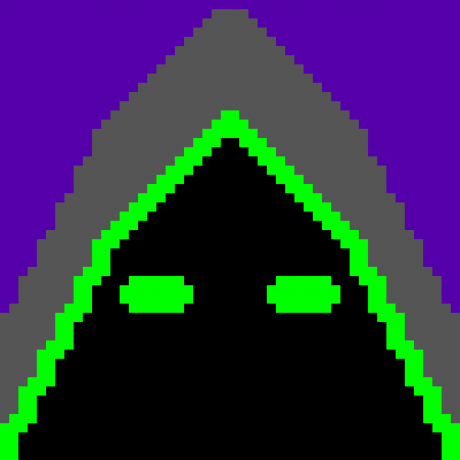

D33DAA
This is just my little page where I post updates about what I'm doing, most of it playing games. A lot of this will be any projects I'm doing on the Minecraft Server that I am Senior Moderator on.
You can visit the website for this server, and connect to it using the ip
mc.oxencraft.netCatch me there maybe! I'll probably be doing something expensive and useless or swinging my ban hammer.
Other than that, you can follow me on Twitter, Tumblr or you can check out my Youtube channel. (I haven't uploaded in over two years, but occasionally I sit and daydream about restarting, before breaking down into tears about the futility of existence.)
Night Vale Station (27/06/16)
My latest project is a space station in the End. I think it's quite an interesting idea for a village. Naturally, it has high requirements to entry, as you must make your own way to the end before you are allowed to teleport in and out of it. Additionally, I am adding a rule that space helmets (blocks of glass renamed) must be worn with /hat, with is only available to some player ranks. Additionally, you cannot claim land in the End, so I must be able to trust everyone of my residents.
This is mostly inspired by my recent playtime in Elite Dangerous and while I find MC lacking for spacey stuff, I am going to do it anyway. It's also inspired by the Welcome to night Vale Podcast that I've been listening to recently. I hope to incorporate the bizarre humour throught the station while keeping it as advanced and useful as possible. Here's a plan I made in MS Paint for the start of the station:

I'm hoping to include a metro system and a food distribution system. The metro will run under the station by minecart and have junctions, using a system I've designed before. I will also have a fully automatic potato farm that will then be distributed to different parts of the station by minecart running over the station. I'll be using this design:
The products of this farm will be distributed by the system. The iron farm is top priority for me as the materials I will be using, quartz, and black clay are not cheap. I will also have to make sure the iron farm and food farm are more than 64 blocks apart to prevent issues. I am yet to know if villager ai works in the End, but I will be doing tests.
In order to restrict access to locations without claims, I have found a helpful tutorial on a passcard system that looks very interesting:
Just a side note, this is the design I have for the station banner. It's based off the Night Vale logo. Hope you like it!

I'll update further as time goes on.